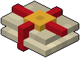
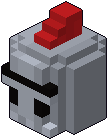
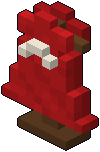
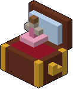
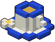
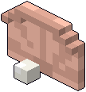
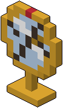
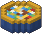
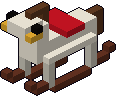

Letto della principessa
+1 energia massima.
- Prezzo
- 10 promesse
- Zona
- il letto
- Sulla lavagnetta
- da subito
I ricordi arredano la stanza della principessa e valgono a ogni discesa, tutti insieme. Si comprano sulla lavagnetta delle promesse, appesa sopra il leggio accanto alla porta della sua stanza: guardala e premi E, poi tieni premuto E su un ricordo e le promesse che hai in tasca ci passano sopra una alla volta. Quelle scritte restano lì per sempre, anche se non arrivano ancora al prezzo: alla discesa dopo riprendi da dove eri rimasta. Quelle che tieni in tasca le porti giù per il negozio, e restano tue anche se muori (vedi Come si gioca). Quando le promesse bastano, il ricordo compare subito al suo posto nella stanza e vale già in quella discesa.
Su una lavagnetta nuova ci sono solo il Letto della principessa, il Tomo delle rune e lo Scudo. Gli altri ricordi compaiono quando li sblocchi, e da quel momento restano nello slot:
Ogni ricordo ha la sua zona della stanza, e in una zona ne vale uno alla volta: il Letto della principessa, il Lettino dell'orsetto e il Letto dei sette nani, per esempio, stanno tutti nella zona del letto: ogni zona ha due o tre ricordi tra cui scegliere, e lo spazio è quello. Se compri un ricordo per una zona già occupata prende il posto del vecchio, che resta tuo: E sulla zona per rimetterlo, anche all'inizio di una discesa. I ricordi che danno un oggetto (lo scudo, le chiavi) lo ridanno a ogni discesa.
+1 energia massima.

+20 mana massimo.

Parti con lo scudo in mano.

Un balzo di fila in più.

I nemici sconfitti lasciano una promessa il doppio delle volte.

Una volta, morendo, ti rialzi.

A ogni piano vedi subito la scala e la porta nera.

Parti con due chiavi dorate.

Balzo più lungo.

Scegli il dono di partenza fra cinque invece che fra tre.
A ogni alba ritrovi 1 energia.

Ogni cavaliere accasciato ti lascia una promessa in più.

A ogni piano il primo colpo non ti ferisce.

Parti con un cuore nero.

A ogni arena e a ogni boss, per i primi 5 secondi i dardi non costano mana.

A ogni piano nuovo ritrovi 1 energia.

A ogni piano le stanze segrete compaiono sulla mappa.

Niente mappa, ma le arene lasciano un dono più spesso.

Al negozio tutto costa una promessa in meno.

Corri più veloce.